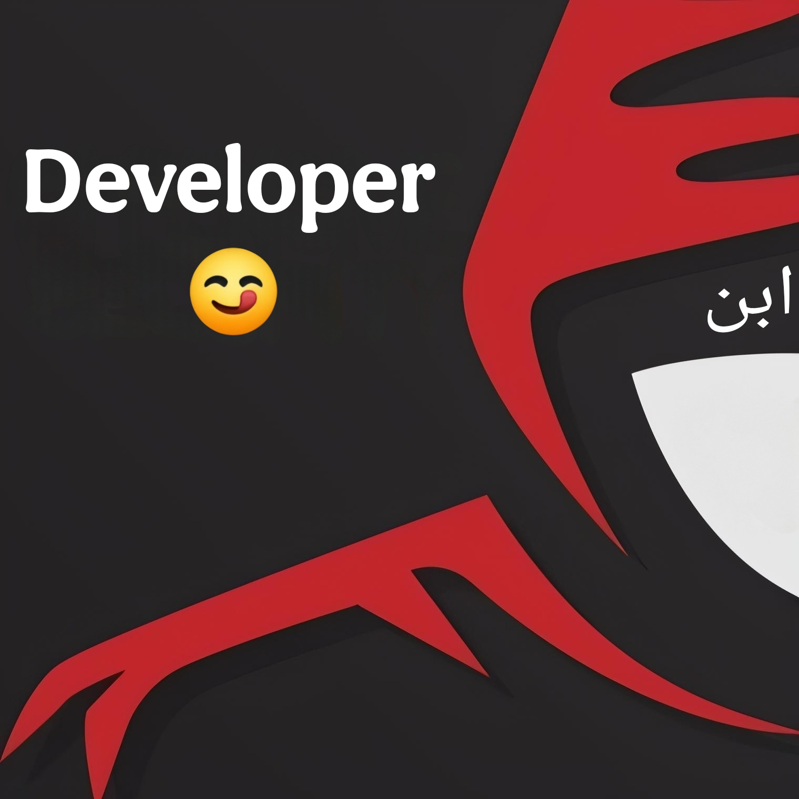

Developer😉
Ibnu Dwi S
Saya seorang developer aplikasi yang mengkhususkan diri dalam bahasa pemrograman Java untuk android development. Saya memiliki keahlian dalam menciptakan solusi perangkat lunak yang robust dan efisien. Java dikenal sebagai salah satu bahasa pemrograman yang paling populer dan digunakan secara luas, berkat kemampuannya untuk berjalan di berbagai platform berkat konsep "write once, run anywhere".
Saya juga beralih ke pengembangan aplikasi mobile dengan menggunakan Android SDK, yang memungkinkan saya untuk membuat aplikasi yang dapat diakses oleh para pengguna.
Dengan semangat untuk terus belajar dan beradaptasi dengan teknologi baru, saya selalu mencari kesalahan pada bug-bug yang saya temukan untuk meningkatkan keterampilan saya sebagai developer aplikasi Java, walaupun secara otodidak.
Information
Nama: Ibnu Dwi S
umur: 15th
Tanggal lahir: 20 october 2009
Hobi: Ngetik/ Ngoding
Tujuan: Software Developer
Contact
Telepon: +62 821 3678 3758
Cek my Page Cek my Video Cek my Application